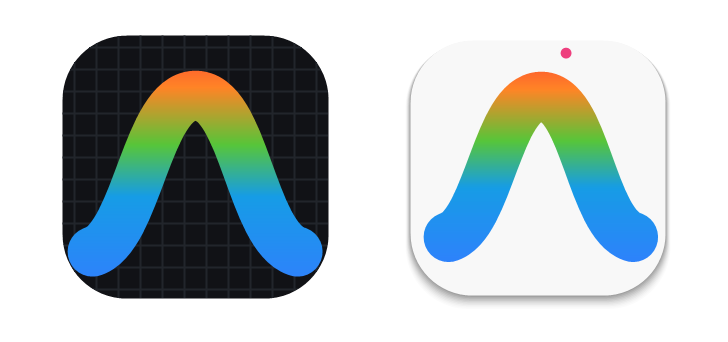
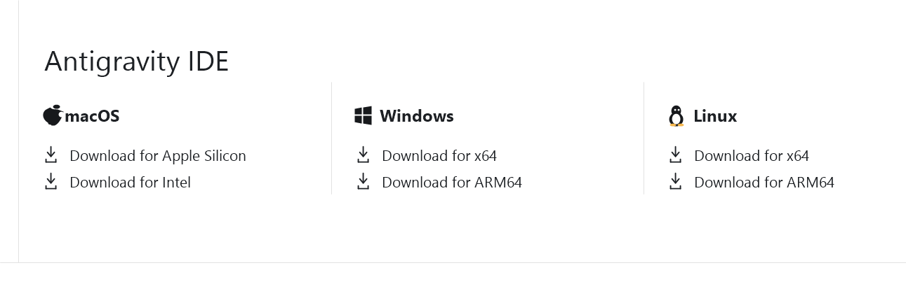
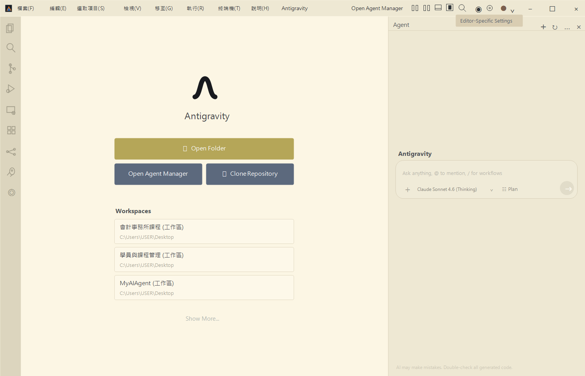
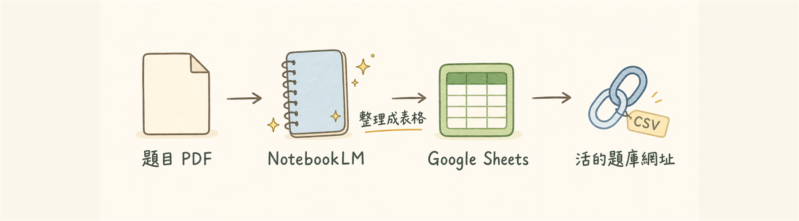

為了讓上課當天可以直接動手做，麻煩在開課前先把下面六項準備好。預計 30 分鐘 就能搞定。
⚡ 安裝完了？ 🧩 這裡跳轉 → 程式模組安裝
⓪ 訂閱一個 AI（GPT Plus / Claude / Gemini Pro 三選一）
① 下載並安裝 Antigravity IDE
② 申請一組 GitHub 帳號
③ 安裝 Git（程式碼版本管理工具）
④ 讓電腦「登入」你的 GitHub（裝 gh）
⑤ 準備好你的題庫（選擇題 + 標好正確答案）
使用 → 或 空白鍵 切換下一頁
上課需要用 AI 幫你寫程式，三個選一個訂閱就能上課。
📊 本課程推薦順序：GPT Plus ＞ Claude ＞ Gemini Pro
💡 三家擇一即可，月費都是 660 元。本課程要做的「寫程式 + 生圖 + 整合到網頁」流程，GPT Plus 最順手；想長期專注寫程式可選 Claude；只想入門 Gemini Pro 也夠用。
當天有兩台裝置會輕鬆很多：
📱 一台平板或手機：看老師上課畫面、簡報
💻 一台電腦：自己跟著操作
只有一台電腦也可以上，但需要在「看講解」和「做練習」之間頻繁切換，會比較手忙腳亂。
Antigravity IDE 是 Google 推出的 AI 程式開發環境，課程中會用它來示範如何讓 AI 幫我們把日常工作自動化、做出實用小工具。
官方下載網址
https://antigravity.google/⚠️ 官網有兩個版本，認清楚再下載
課程要用的是 黑色的 Antigravity IDE，不是白色的 Antigravity 2.0。下載前看一下圖示顏色就不會裝錯。

✅ 黑色 = 用這個
Antigravity IDE
❌ 白色 = 不要
Antigravity 2.0
下載完直接安裝即可，登入用你平常的 Google 帳號（Gmail）就行，不用另外註冊。
打開網址 antigravity.google
頁面往下捲，找到 「Antigravity IDE」（黑色圖示）那個區塊，選你電腦對應的作業系統版本下載

↑ 下載區塊長這樣，看到「Antigravity IDE」標題就對了（Windows x64 / macOS Apple Silicon / Intel 三個版本擇一）
下載完，雙擊安裝檔，一路下一步
開啟後用 Google 帳號登入，看到下面這個畫面就完成了 ✓

↑ 主畫面長這樣。左邊側邊欄 + 中間歡迎頁 + 右邊 AI 對話區，看到就對了 ✓
⚠️ 如果出現「無法驗證開發者」之類的提示，是正常的，照系統指示允許開啟即可。
GitHub 是全世界工程師存放程式碼的地方，課程中我們會用它來備份、分享、版本管理你做出來的東西。免費。
已經有帳號的同學可以跳過這一步 🎉
輸入 Email（建議用常用的）、設定 密碼 和 使用者名稱（username）
完成驗證（拼圖小遊戲）→ 收信點驗證連結
登入後看到自己的首頁就完成了 ✓
💡 小提醒：username 之後不容易改，建議用英文 + 好記的名字（例如 abby-cpa、victor-acct）。
Git 是程式碼版本管理的工具，可以想成「程式碼的存檔系統」。Antigravity 和 GitHub 都靠它才能正常運作，沒裝 Git 後面所有步驟都會卡關。
下一頁是 Windows 和 Mac 的安裝方式，看自己用的系統就好 👇
頁面打開後，只點下圖紅框那行，其他通通無視 🙈
雙擊下載好的安裝檔，一路下一步到底
打開 PowerShell 驗證：按 Win+X → 選「Windows PowerShell」或「終端機」（或開始選單搜尋 PowerShell）
輸入：
git --version
看到 git version 2.x.x = 完成 ✓
⚠️ Windows 安裝精靈選項看起來嚇人，真的一路下一步就好，不會出事。
打開「終端機」（按 ⌘+空白鍵 搜 終端機）
輸入：
git --version
跳出「需要安裝命令列開發者工具」視窗 → 按「安裝」→ 等 3–5 分鐘
再輸入一次：
git --version
看到類似 git version 2.39.x 就成功 ✓
申請完帳號 還不夠。要讓 Antigravity 之後能直接幫你建 repo、上傳程式碼，必須先讓電腦也認識你的 GitHub 帳號。
做法：裝一個叫 gh（GitHub CLI）的工具，再用它登入一次。
這步做完，之後永遠不用再做。
👇 接下來請依照你的電腦選一條路走（點選下方按鈕直接跳轉）
打開終端機
按 ⌘+空白鍵 → 輸入「終端機」→ Enter
（或：應用程式 → 工具程式 → 終端機）
確認有沒有 Homebrew，輸入：
brew --version
✅ 看到 Homebrew 4.x.x → 翻下一頁（Step 3）
❌ 看到 command not found → 先裝 Homebrew，整段貼進去按 Enter：
/bin/bash -c "$(curl -fsSL https://raw.githubusercontent.com/Homebrew/install/HEAD/install.sh)"
🛑 重要：貼上後一定要看完這段再動手！
Homebrew 下載要 3~10 分鐘，跟一般安裝程式不同，終端機不會有進度條，畫面看起來像「卡住」一樣，但其實正在跑。
👉 看到這些字代表正在下載，不要按任何鍵、不要貼任何東西：
==> Downloading and installing Homebrew...
remote: Enumerating objects: 340833, done.
remote: Counting objects: 100% ...
⏳ 耐心等，等到終端機回到一般提示字（最後一行有 使用者名稱@電腦 ~ %）才算跑完。
⚠️ 太早貼下一步指令會出現 command not found 或 no such file or directory，Homebrew 還沒裝好就跑下一步當然會錯。
⌛ 安裝過程中會發生這些事，照著做就好：
1️⃣ 螢幕問你密碼 → 輸入 Mac 開機密碼 按 Enter（打字不會顯示是正常的，安心打）
📌 看到 Press RETURN/ENTER to continue or any other key to abort: → 只能按 Enter 鍵！按其他鍵會中止安裝
2️⃣ 跑完最後會看到 ==> Next steps:，下面列出 2~3 行指令。直接把下面這組整段貼進終端機按 Enter 即可（先記下你的使用者名稱，登入畫面顯示的那個英文名）：
🍎 Apple Silicon Mac（M1 / M2 / M3 / M4，2020 年後幾乎都是）
echo >> ~/.zprofile
echo 'eval "$(/opt/homebrew/bin/brew shellenv)"' >> ~/.zprofile
eval "$(/opt/homebrew/bin/brew shellenv)"
💻 Intel Mac（2019 年以前的舊款）
echo >> ~/.zprofile
echo 'eval "$(/usr/local/bin/brew shellenv)"' >> ~/.zprofile
eval "$(/usr/local/bin/brew shellenv)"
不確定自己是哪種？左上角 蘋果圖示 → 關於這台 Mac，看「晶片」那行：寫 Apple M… 是 Apple Silicon；寫 Intel 就是 Intel。
3️⃣ 把終端機關掉，重新打開一個新的，再跑一次 brew --version 確認看到版本號。
在終端機輸入：
brew install gh
會跑一段時間（下載 + 安裝），等它跑完出現提示符號就好。
✅ 裝完驗證：
gh --version
看到 gh version 2.x.x = 安裝成功 ✅ → 翻下一頁開始登入。
在終端機輸入：
gh auth login
接著它會問幾個問題，用方向鍵 + Enter 照下面選：
❓ Where do you use GitHub? → 選 GitHub.com
❓ What is your preferred protocol? → 選 HTTPS
❓ Authenticate Git with your GitHub credentials? → 選 Yes
❓ How would you like to authenticate? → 選 Login with a web browser
終端機會顯示 8 碼驗證碼（例：AB12-CD34），並提示 Press Enter to open github.com in your browser。
⚠️ 按 Enter 後做兩件事：
1. 瀏覽器跳出 → 貼上 8 碼 → 點 Continue
2. 點 Authorize（授權）
完成後瀏覽器會顯示「Congratulations, you're all set!」，回終端機會看到 ✓ Logged in as 你的帳號。
🧪 最終驗證，輸入：
gh auth status
畫面長這樣 = 大功告成 🎉（重點看第一行的綠色 ✓）：
github.com
✓ Logged in to github.com account 你的帳號
- Active account: true
- Git operations protocol: https
- Token: gho_***
- Token scopes: 'gist', 'read:org', 'repo', 'workflow'
⚠️ 只有第一行是綠色 ✓，其他 - 開頭的灰色文字是正常資訊，不是錯誤。
💡 常見坑
🔴 裝完 Homebrew、重開終端機還是 command not found （每屆都有人踩）
→ 你 沒有跑「Next steps」那兩行指令。Homebrew 雖然裝好了，但終端機還不知道它在哪。↩ 回 Step 2 補做 Next steps
→ 簡單版：直接複製下面兩行貼進終端機按 Enter（Apple Silicon Mac 用）：
echo 'eval "$(/opt/homebrew/bin/brew shellenv)"' >> ~/.zprofile
eval "$(/opt/homebrew/bin/brew shellenv)"
→ 如果你是 Intel Mac（2019 年以前），把 /opt/homebrew/ 改成 /usr/local/
📌 一句話解釋給學員聽：「Homebrew 已經裝好了，但你的終端機還不知道它在哪裡。上面那兩行就是『告訴終端機 Homebrew 的位置』。」
🔴 卡在 web browser 那步 → 重跑 gh auth login ↩ 回 Step 4 重做，最後一題改選 Paste an authentication token，到 github.com/settings/tokens 產生 Personal Access Token 貼進去
🔴 gh auth status 顯示 not logged in → 重跑 gh auth login 一次 ↩ 回 Step 4 重做
打開 PowerShell（終端機）
按 Win+X → 選「Windows PowerShell」或「終端機」
（或：開始選單搜尋「PowerShell」→ Enter）
確認有沒有 winget（Windows 內建套件管理工具），輸入：
winget --version
✅ 看到 v1.x.x 之類的版本號 → 翻下一頁（Step 3）
❌ 看到 無法辨識 'winget' → 你的是 Windows 10 舊版，兩種解法：
A. 開 Microsoft Store 搜尋「App Installer」更新（最簡單）
B. 直接到 cli.github.com 下載 .msi 安裝檔，裝完跳到 Step 3 後段驗證
在 PowerShell 輸入：
winget install --id GitHub.cli -e
第一次跑會問「是否同意來源條款？」→ 輸入 Y 按 Enter。會跑一段時間，等它跑完出現提示符號。
⚠️ 關鍵動作：
把 PowerShell 整個關掉，重新打開一個新的
不重開的話，新裝的 gh 不會被認到，會一直「找不到指令」。
✅ 裝完驗證（在新開的 PowerShell）：
gh --version
看到 gh version 2.x.x = 安裝成功 ✅ → 翻下一頁開始登入。
在 PowerShell 輸入：
gh auth login
接著它會問幾個問題，用方向鍵 + Enter 照下面選：
❓ Where do you use GitHub? → 選 GitHub.com
❓ What is your preferred protocol? → 選 HTTPS
❓ Authenticate Git with your GitHub credentials? → 選 Yes
❓ How would you like to authenticate? → 選 Login with a web browser
PowerShell 會顯示 8 碼驗證碼（例：AB12-CD34），並提示 Press Enter to open github.com in your browser。
⚠️ 按 Enter 後做兩件事：
1. 預設瀏覽器跳出 → 貼上 8 碼 → 點 Continue
2. 點 Authorize（授權）
完成後瀏覽器顯示「Congratulations, you're all set!」，回 PowerShell 會看到 ✓ Logged in as 你的帳號。
🧪 最終驗證，輸入：
gh auth status
畫面長這樣 = 大功告成 🎉（重點看第一行的綠色 ✓）：
github.com
✓ Logged in to github.com account 你的帳號
- Active account: true
- Git operations protocol: https
- Token: gho_***
- Token scopes: 'gist', 'read:org', 'repo', 'workflow'
⚠️ 只有第一行是綠色 ✓，其他 - 開頭的灰色文字是正常資訊，不是錯誤。
💡 常見坑
🔴 裝完輸入 gh 找不到指令 → PowerShell 沒重開。整個視窗關掉再打開一個新的。
🔴 winget 一直失敗 → 直接到 cli.github.com 下載 .msi 雙擊安裝，再回來跑 gh --version。
🔴 卡在 web browser 那步 → 重跑 gh auth login ↩ 回 Step 4 重做，最後一題改選 Paste an authentication token，到 github.com/settings/tokens 產生 Personal Access Token 貼進去。
🔴 gh auth status 顯示 not logged in → 重跑 gh auth login 一次 ↩ 回 Step 4 重做。
課堂後半段，我們要把你的題庫變成遊戲。
沒有題庫，等於沒有彈藥 ⚠️ 請務必先準備好。
✅ 題型：選擇題（四選一）
每題一個題幹 + 四個選項（A / B / C / D）
✅ 一定要附正確答案
沒有答案，遊戲沒辦法判斷對錯
📦 數量建議
最少 10 題，建議 20~30 題，多多益善
📄 格式不拘
Word / PDF / 純文字 / 拍照都行，課堂會用 NotebookLM 自動整理成標準表格
💡 題目範例（給你參考格式）
題目：唐朝的首都是哪裡？
A. 北京 B. 長安 C. 洛陽 D. 開封
正確答案：B
⚠️ 沒準備題庫的話
課堂只能用我們提供的範例題庫練習，帶不走「你自己科目」的成品。
課堂上會帶大家做，但想先在家完成也可以：用免費的 NotebookLM 把題庫整理成標準表格，再讓 Google Sheets 發布成一條 CSV 活網址——之後改題目，遊戲自動更新。接下來 4 頁就是完整步驟 👉

為什麼用 NotebookLM？ 🆓 免費、不算 AI 額度，放心整理整本題庫 · 📄 直接讀 PDF / Word · 📊 產出電腦能用的標準表格
網址：notebooklm.google.com（用 Google 帳號登入）
打開 notebooklm.google.com → 用 Google 帳號登入
點左上角 「＋ 建立新筆記本」（或 + New notebook）
把你的題目 PDF 檔拖進中央上傳區（或點「上傳」選檔案）
✅ 支援格式：PDF / Word / Google 文件 / 純文字 / 網址
✅ 一次可以丟多個檔案（同單元 / 同章節題目都丟進去）
等 10~30 秒，跑出「來源摘要」→ 表示讀好了 ✓
💡 小撇步：題庫如果是圖片掃描（如手寫考卷拍照），NotebookLM 也能讀，但建議先用手機掃描 App 轉成 PDF，認字率更高。
把下面這段提示詞貼進 NotebookLM 下方的對話框，按送出（這是課堂用的同一段，點「複製」即可）：
請幫我把這份題庫整理成「四選一選擇題」的標準表格。
格式要求：
1. 每一列就是一題
2. 欄位順序：題目 | A | B | C | D（總共 5 欄）
3. A 欄位「一律放正確答案」（不管原本標的是哪個選項，正解都搬到 A）
4. B、C、D 欄位放剩下 3 個錯誤選項
5. 不要包含題號、不要分節、不要其他說明
6. 如果某題未滿 4 個選項，缺的格子用「空」補上
7. 用 Markdown 表格格式輸出，方便我複製貼到 Excel
✅ 完成的表格會長這樣：
| 題目 | A（正解） | B | C | D |
|---|---|---|---|---|
| 蘋果的英文 | apple | banana | orange | grape |
| 世界最高山 | 珠穆朗瑪峰 | 玉山 | 富士山 | 阿爾卑斯山 |
⚠️ 檢查重點：A 欄是不是全部都是正確答案？沒有就再說一次：「A 欄要放正解，請重新整理」。
表格跑出來後，在那段回應的下方點 「儲存到筆記」（圖示像便利貼）
→ 右邊側欄會出現一筆新的「記事」
點那筆記事右邊的 「⋮」三點選單 → 選 「匯出為試算表」
→ 會自動建一份 Google Sheets，並直接打開
確認內容無誤後，重新命名：【科目】題庫_v1
例：「國一英文_單字題庫_v1」
需要 Excel 檔的話：檔案 → 下載 → Microsoft Excel (.xlsx)
不需要就留在 Google Sheets——下一頁要用它做活網址
這是整個流程的魔法時刻——一條網址，遊戲跟著題庫一起更新。
在 Google Sheets 點左上角 「檔案」→「共用」→「發布到網路」
跳出視窗後，2 個下拉選單要選對：
點藍色 「發布」 按鈕 → 跳確認 → 點「確定」
會跳出一條很長的網址（docs.google.com/ 開頭）→ 複製起來
這條網址 = 你的「活題庫」，把它存在好找的地方，上課當天要用
驗證能用：把網址貼到瀏覽器網址列按 Enter
→ 會下載一個 .csv 檔，或直接顯示「題目,A,B,C,D」開頭的內容 = 成功 ✓
💡 之後想改題目？直接在 Google Sheets 改 → 存檔 → 遊戲自動更新，不用重新發布、不用重做網頁。
① Antigravity
☐ 電腦能打開 Antigravity IDE
☐ 已用 Google 帳號登入
② GitHub 帳號
☐ 擁有可登入的 GitHub 帳號
☐ 記得自己的 username
③ Git
☐ 終端機輸入 git --version 有版本號
④ 電腦登入 GitHub
☐ 終端機輸入 gh --version 有版本號
☐ gh auth status 看到 ✓ Logged in
⑤ 題庫
☐ 題目是選擇題（四選一）
☐ 每題都標好正確答案
☐ 至少 10 題 以上
📸 遇到卡關不用緊張
把錯誤畫面截圖，到課程群組提問，我們會一起處理 💪
提問時附上：① 你在哪一步 ② 螢幕截圖 ③ 你的作業系統（Mac / Windows）
Antigravity 裝好之後，再花 5 分鐘裝兩個延伸模組，上課會順很多：
🈶 繁體中文語言包 建議必裝
選單、按鈕、提示全部變繁體中文，操作不用再用猜的。
🤖 AI 程式助理（二選一）
Codex（OpenAI）或 Claude Code（Anthropic）擇一。不必兩個都裝，選你有訂閱或老師指定的那個。
👇 完整圖解教學在這裡（四張截圖步驟 + 安裝完成檢查表）
🧩 打開「延伸模組安裝」圖解教學看著截圖跟著點，5 分鐘完成四個重要網址再給你一次，存著備用：